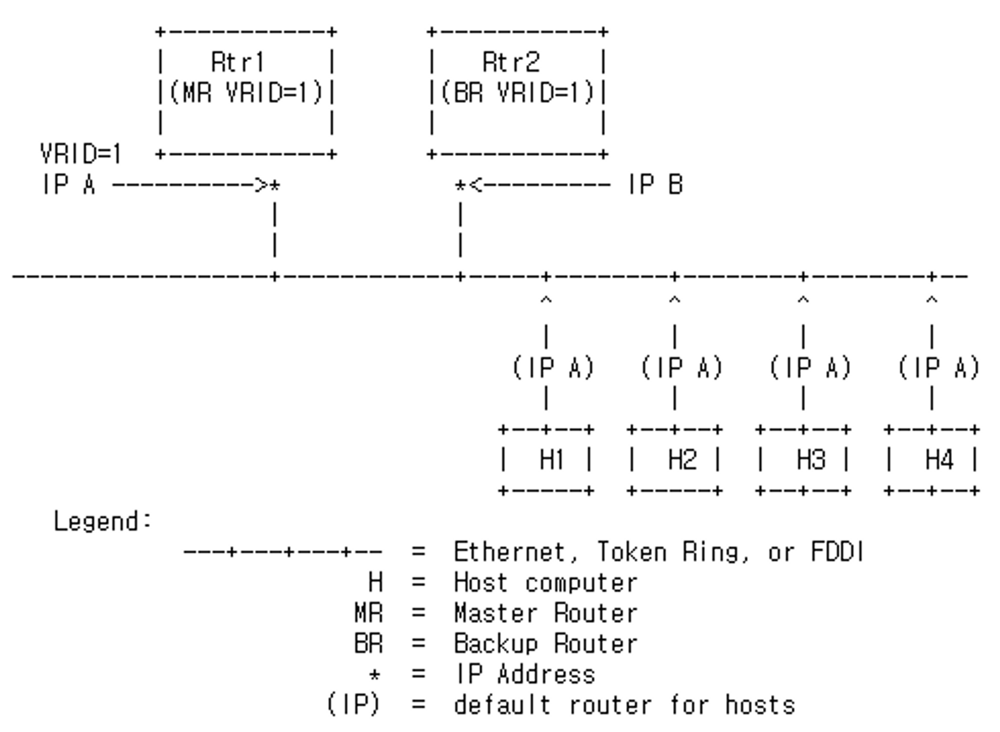

참고한 것들
본 문서는 RFC3768 를 읽고 정리한 글입니다. 글이 좀 깁니다.
1. Why VRRP?
Default gateway (First hop) determination
- End-hosts (예를들면 뭐 서버) 는 동적 라우팅 기능이 없기 때문에 일반적으로 L3 스위치나 라우터를 맨 앞에 붙여 default gateway 로 사용하는 방식으로 외부와 통신한다.
- 그래서 default gateway (혹은 first hop 이라는 용어도 이제 좀 익숙해지자) 의 IP 주소를 알아야 End-host 에 static routing 을 설정해놓을 수 있다.
방법1) DISC - ICMP Router Discovery Protocol
- Default gateway determination 를 위해서는 ICMP 패킷을 이용해 이웃들이 살아있는지 확인하는 방법(DISC, ICMP Router Discovery Client, RFC1256) 을 활용할 수 있다.
- 이는 Default gateway 를 ICMP Router Discovery Message 를 보냄으로써 알아내는 방식이다.
- 하지만 이를 위해서는 모든 참여자들(End-host 겠제)이 ICMP 를 보내는 등의 작업을 하며 능동적으로 참여해야 하는데, 참여자의 수가 많아질수록 (모든 호스트가 RDM 을 보내야 하므로) 오버헤드가 커지게 된다.
- 결과적으로 서비스의 공백기간이 길어질 여지가 많다.
Neighbor or router discovery protocols may require active participation by all hosts on a network, leading to large timer values to reduce protocol overhead in the face of large numbers of hosts. This can result in a significant delay in the detection of a lost (i.e., dead) neighbor, that may introduce unacceptably long “black hole” periods.
방법2) Statically configured default route
- 또 하나의 방법은 DHCP(Dynamic Host Configuration Protocol) 을 이용해 IP 를 동적으로 할당하고 Default gateway 도 알려주는 것이다. (마치 NAT 처럼)
- 하지만 이것은 Single point of failure 문제를 일으킬 수 있다; Default gateway 가 불능상태가 되면 진입할 수가 없게 되므로
The use of a statically configured default route is quite popular; it minimizes configuration and processing overhead on the end-host and is supported by virtually every IP implementation. This mode of operation is likely to persist as dynamic host configuration protocols [DHCP] are deployed, which typically provide configuration for an end-host IP address and default gateway. However, this creates a single point of failure. Loss of the default router results in a catastrophic event, isolating all end-hosts that are unable to detect any alternate path that may be available.
Also, without VRRP…
- 위의 두가지 방법 (+ 추가적으로는 무지성으로 Default gateway의 IP주소를 고정해버리고 End-host의 static route에 추가하는 방법도 있다.) 으로는 Default gatewat fault 에 대응하기 힘들다.
- Fault 에 대응하기 위해서 Gateway 를 이중화 한다고 하더라도 결국에는 fault 이후 failover 를 위해 각각의 End-hosts 들의 static route 를 수정해줘야 하기 때문이다.
However, VRRP provides…
- VRRP 는 Static default routed environment 환경 (일반적인 동적 라우팅을 지원하지 않는 End-host 들이 default gateway 뒤에 배치되어있는 환경?) 에서 Single point of failure 를 제거하기 위해 개발되었다.
- VRPP 에서는 Election 과정을 거쳐 Packet forwarding 을 담당할 책임을 가지는 Master 를 선정하게 된다.
- 그리고 Master 가 불능해졌을 경우 다시 Election 과정을 거쳐 새로운 Master 를 선정하는 방법을 통해 gateway failover 를 지원하게 된다.
- 또한 이 라우터들을 묶어 Virtual router 를 생성하게 되므로 Failover가 발생하더라도 default gateway 의 주소는 변경되지 않는다.
- 결과적으로 End-hosts 들은 default gateway 의 주소를 static 하게 설정하더라도 장애에 대응할 수 있게 된다.
Similar protocols
- CISCO 독점의 HSRP (Hot Standby Router Protocol) 하고 IPSTB (IP Standby Protocol) 이 있댄다.
Scope of RFC3768
- VRRP 의 소개와 작동과정 (뭐 메세지 포맷 등 까지)
- VRRP 가 가지는 취약점
- IPv6 에서의 작동 과정을 포함하지 않음; RFC3768 에서는 IPv4 의 경우만 논한다.
2. Terminology
- VRRP router: 실제 라우터를 말하는 것인듯
- VRRP 를 작동시키는 실제 라우터
- 하나 이상의 Virtual router 로써 참여할 수 있다.
- Virtual router: LAN 상에서 Default router(gateway) 로의 역할을 하는 가상의 라우터
- Virtual router 의 IP 주소가 Virtual IP (VIP) 이고
- Virtual router 의 MAC 주소가 Virtual MAC 이며
- VRID (Virtual Router ID) 와 여러개의 VIP 로 구성된다.
- IP Address Owner
- 만약 VIP 가 실제 IP 라면 그 실제 IP 를 가지고 있는 놈이 IP Address Owner 가 된다
- 이게 뭔말이냐면 VIP 는 실제 Network Interface 에 할당되지 않는 IP 여도 가능한데, 그렇지 않고 실제 Network Interface 에 할당된 IP 가 VIP 로 등록이 된다면 해당 Network Interface 가 설치된 놈이 IP Address Owner 가 된다 이말이야
- 예를 들어보면 VIP 가
192.168.1.10이고 VRRP Router 의 IP 주소가192.168.1.101,192.168.1.102, … 라면 IP Address Owner 는 없지만 - VRRP Router의 IP 주소가 위와 같은데 VIP 가
192.168.1.101라면192.168.1.101을 들고있는 VRRP Router 가 IP Address Owner 가 된다 이말이여
- 예를 들어보면 VIP 가
- Primary IP Address
- 라우터에 붙어있는 Network Interface 들 중에 핵심적인 하나의 IP 주소
- 딱히 이놈을 정하는 알고리즘은 없는거 같고 그냥 첫번째 IP 를 이걸로 지정할 수 있댄다
- VRRP Advertisement Packet 의 SRC IP 는 항상 이 Primary IP Address 가 된다.
- Virtual Router Master
- Virtual Router 의 IP 에 보내진 패킷들을 Forwarding 할 책임이 있는 VRRP Router 를 말한다.
- Forwarding 은 물론 ARP 까지 응답할 책임이 있다.
- 만약 IP Address Owner 가 존재한다면, 이놈은 무조건 Virtual Router Master 가 된다.
- Virtual Router Backup
- Virtual Router Master 가 불능상태가 되었을 때 Virtual Router Master 가 될 책임이 있는 VRRP Router 를 말한다.
3. Features
- IP Address Backup: (핵심적인 기능인) IP Address Failover
- Minimize the duration of black holes: Master down 에 대한 failover 가 신속하게 일어나서 end-host 접근성에 대한 downtime 이 최소화 되어야 한다.
- Minimize the steady state bandwidth overhead and processing complexity: 아무런 문제도 발생하지 않은 정상상태에서 대기할 때에도 대역폭이나 연산과정에 부담을 줘서는 안된다
- 즉, 과도한 통신이 일어나거나 복잡한 프로세싱이 발생하면 안된다는 것
- IP 를 지원하는 여러 Data link layer 프로토콜(Multi Access Control, MAC 을 위한)과의 호환성이 좋아야 한다.
Function over a wide variety of multiaccess LAN technologies capable of supporting IP traffic.
- 로드밸런싱을 위해 여러개의 Virtual Router 를 선출할 수 있어야 한다.
Provide for election of multiple virtual routers on a network for load balancing.
- 단일 LAN 환경에서 여러개의 논리 IP Subnet 을 사용하는 경우에도 사용할 수 있어야 한다.
- 약간 VLAN 말하는거같은데
- 하나의 Virtual router 에 VIP 를 여러개 설정할 수 있도록 하는게 약간 이것때문인거같음
- VIP 여러개 설정해서 여러 Subnet 이 존재해도 Default gateway 를 설정할 수 있게 하는거인듯 → 여러 Subnet 의 IP 대역 당 하나씩 VIP 가 필요할 테니까
Support of multiple logical IP subnets on a single LAN segment.
- Preferred Path Indication: 여러개의 라우터들 간에 선호하는 (datagram) 경로를 설정할 수 있어야 한다.
- 이건 왜냐면 각 라우터들의 환경이 제각각일수도 있기 때문
- 가령 대역폭이나 reliability 가 안좋은 라우터의 경우에는 되도록이면 해당 라우터로 경로가 설정되지 않게 하는 것이 바람직하다
- 약간 Priority 를 이용하여 이것을 명시할 수 있는듯 → 위와 같은 라우터에는 Priority 를 낮게 잡아서 어쩔 수 없는 상황이 아니면 Master 가 되지 않도록 설정해줄 수 있는 듯하다.
- Minimization of Unnecessary Service Disruptions: 불필요한 서비스의 방해가 있어서는 안된다
- 마스터가 제대로 작동하는 한 우선순위가 같거나 낮은 Backup router 에 의한 state change 가 일어나서는 안된다
- 하지만 특정 환경에서는 현재 마스터가 제대로 작동하고 있다면 우선순위가 높은 Backup router 가 가용상태가 되었을 때에도 state change 가 일어나지 않게 하는 것이 나을수도 있다네
Some environments may find it beneficial to avoid the state transition triggered when a router becomes available that is preferred over the current Master. It may be useful to support an override of the immediate convergence to the preferred path.
- Efficient Operation over Extended LANs: Virtual router 의 MAC 주소를 Data link layer 의 송신주소로 사용하고 마스터가 변경된 이후, 그리고 주기적으로 위와 같이 설정된 패킷을 전송하여 ARP 캐시 테이블을 유지해야 한다.
- 만일 이렇게 하지 않으면 패킷들이 유실 (flooding) 된다고??
The use of the virtual router MAC address in an extended LAN employing learning bridges can have a significant effect on the bandwidth overhead of packets sent to the virtual router. If the virtual router MAC address is never used as the source address in a link level frame then the station location is never learned, resulting in flooding of all packets sent to the virtual router. To improve the efficiency in this environment the protocol should: 1) use the virtual router MAC as the source in a packet sent by the Master to trigger station learning; 2) trigger a message immediately after transitioning to Master to update the station learning; and 3) trigger periodic messages from the Master to maintain the station learning cache.
4. Overview
- IP Multicast datagram 을 이용한다.
- 따라서 IP Multicast 를 지원하는 Data link layer 프로토콜을 모두 사용할 수 있다.
- 그리고 Multicast 라는 말에서 알 수 있듯이 VRRP v2 는 Multicast 밖에 사용하지 못한다.
- Virtual router MAC 주소로 Well-known MAC 주소를 사용한다.
- IEEE 802 48-bit MAC Address (니가 흔히 보던 그 MAC 주소) 포맷을 사용한다.
- 마스터가 주기적으로 보내는 VRRP packet 의 송신주소로 사용되어 ARP 캐시 테이블을 유지하도록 한다.
- Virtual router 는 VRID 와 몇개의 IP 들로 선언된다.
- VRRP router 들은 인터페이스의 실제 주소 혹은 Virtual router mapping과 우선순위를 이용해 Virtual router 와 연관될 수 있다.
- (당연하게도) LAN 환경이 다르면 같은 VRID 를 사용할 수 있다.
- 즉, Virtual router 의 범위는 하나의 LAN 환경에서만 고유하다는 의미임
- 네트워크 트래픽을 줄이기 위해 마스터만이 VRRP Advertisement Packet 을 전송한다.
- 백업 라우터가 더 높은 우선순위를 갖고 있지 않은 한 절대로 마스터를 뺏으려는 시도를 하지 않는다.
- Preferred path (=우선순위가 더 높은 VRRP Router) 가 존재할때가 아니면 preemption 을 하지 않게 하여 서비스가 방해받지 않게 한다.
- 또한 설정을 통해 (관리자의 권한으로?) preemption 시도를 전부 차단할 수도 있다.
- 유일한 예외사항은 Virtual router 의 IP 를 갖고 있는 VRRP router는 항상 마스터가 된댄다.
- 마스터가 불능해지면 다음으로 우선순위가 높은 놈이 마스터로 바뀐다.
- 이때 공백기간이 매우 짧기 때문에 서비스에 최소한의 지장만 주게 된다.
- 두개의 상태(Master 와 Backup) 만 존재하고 메시지 타입도 한개(VRRP Advertisement Packet) 만 존재한다.
- 이것은 프로토콜의 복잡성을 줄이기 위한 최적화의 산물이랜다.
- 두개의 라우터가 서로 상이한 우선순위 (distinct path preference) 를 가지는 상황을 대표적인 시나리오로 생각하고 설계되었다.
- 물론 우선순위가 같은 경우 마스터를 선출하는 짧은 기간동안 같은 우선순위를 가지는 모든 라우터들에게 패킷이 보내진다는 부작용이 있댄다.
- 하지만 우선순위를 다르게 설정하는 시나리오가 대부분의 상황을 커버하는 더 일반적인 것이고
- 마스터의 손실이 빈번하지 않고 마스터 선출에 걸리는 기간은 1초 미만으로 매우 짧기에 위와 같은 부작용이 미치는 영향은 적을 것이랜다.
5. Sample Configuration
Single Virtual Router

- 이건 Router 1 (
Rtr1)은IP A를 가지고 있고 - Router 2 (
Rtr2)는IP B를 가지고 있는 상태에서 VRID1,IP A로 구성된 Virtual router 하나만 두는 구성에 대한 것이다.- Virtual router 의 IP 가
IP A이기 때문에 각 Host들 (H1,H2,H3,H4)은IP A를 이용해 default gateway static routing 이 설정되게 된다. - 당연히 Virtual router 의 IP 를 Router 1 이 들고 있기 때문에 이놈이 무조건 Master 가 되고 (
MR VRID=1) 따라서 우선순위는 255가 된다. - 그리고 Router 2의 경우에는
IP B를 갖고 있기는 하지만 이건 그냥 물리 인터페이스에 할당된 IP 일 뿐 Host 에서 접근할 일은 없는 IP 가 되며 얘는 백업 라우터 (BR VRID=1) 이기 때문에 우선순위는 100을 가진다.- 그래서
IP B는 백업 IP 가 아닌 그냥 무의미한 IP 가 된다. - 왜냐면 VRRP v2 는 Multicast 밖에 지원하지 않기 때문에 VRRP Advertisement Packet 도 수신 주소가
IP B가 아닌 Multicast 주소로 사용되어 아무데도 사용되지 않기 때문 - 주의할점은 백업 라우터랑 백업 IP 랑 헷갈리면 안된다는 거다 → Router 2 는 Virtual router 의 구성원으로써 백업 라우터의 역할을 하지만
IP B는IP A가 사용 불가능하게 되었을 때에 대한 백업 IP 가 아니기 때문
- 그래서
- 이에 따라 모든 Virtual router로 들어오는 패킷은 Router 1 이 처리하게 되고 Router 2 는 놀다가 Router 1 이 죽었을 때야 비로소 Master 로 승격된 뒤 Virtual router 로 들어오는 패킷을 처리하는 방식으로 작동한다.
- 실제 Production 환경에서는 거의 사용할 일이 없는 구성이라는데 왜그런지는 모르겠노
Double Virtual Router

- 이건 Virtual router
VRID1은 위의 예제에서와 동일하게 Router 1이 마스터, Router 2 이 백업 상태로 설정되어있으나 IP B를 가지는 Virtual routerVRID2가 추가되어 백업 IP 까지 구성한 모습인거같음- Virtual router 2의 IP 가
IP B로 구성되어있기 때문에 Virtual router 1와는 반대로 Router 2 가 마스터(+ 우선순위 255), Router 1이 백업 (+ 우선순위 100)으로 설정된다. - 따라서 Virtual router를 한대만 구성한 것과는 다르게
IP B또한 사용할 수 있는 IP 가 되기 때문에 위의 예제에서는H1,H2는IP A로,H3,H4는IP B로 default gateway static routing 이 설정되어있는 것을 확인할 수 있다. - 위와 같이 구성하는 것이 failover 가 가능한 virtual router 2대가 생기는 격이므로 IP 두개를 이용해 부하를 분산시킴과 동시에 Failover 가 가능한 고가용성의 구성도 가능해 진다는거같음
6. Packet Format
IP Packet Header
- VRRP Advertisement Packet은 IP Packet 의 Data 부분에 들어간다 (즉, IP Packet으로 캡슐화된다는 이야기)
- SRC Address: Primary IP 가 들어간다.
- DST Address: Multicast IP 가 들어간다.
- IANA에 의해 할당받은 VRRP 전용 Multicast IP 는
224.0.0.18이다. - 즉, (VRRP v2 표준을 따른다면) 수신지 IP 주소는 무조건
224.0.0.18이 된다.
- IANA에 의해 할당받은 VRRP 전용 Multicast IP 는
- TTL: 무조건 255 로 설정된다. 255가 아닌 패킷은 기각된다.
- Protocol: IANA에 의해 할당받은 VRRP 의 프로토콜 번호는 112이다.
Packet format

- Version: VRRP 버전을 의미한다. 당연히 2가 들어간다.
- Type: VRRP 패킷의 타입을 의미한다. VRRP v2에 따르면 패킷 타입은 Advertisement type밖에 존재하지 않으므로
ADVERTISE를 뜻하는 1이 들어간다.- 따라서 VRRP v2의 경우 Type이 1이 아닌 패킷은 기각된다.
- Virtual Rtr ID: Virtual router 의 VRID 값이다. 기본값은 없고 알아서 설정해줘야 한다.
- Priority: 0~255 의 값을 가지는 우선순위이다. 여기에는 다음의 규칙이 지켜져야 한다:
- Virtual router 의 IP 를 들고 있는 VRRP router의 우선순위는 255이다. 즉, 마스터의 우선순위는 무조건 255이어야 한다.
- 1~254 의 우선순위는 백업을 위한 것으로 기본값은 100이다.
- 0은 현재의 마스터가 VRRP 에 참여하기를 포기했다는 것을 의미하는 특별한 값이다.
- 따라서 Priority가 0이라면 Back router 는 Master timeout 등을 기다리지 않고 신속하게 다음 Master 를 선출해야 한다.
- Count IP Addr: 이전에 얘기했듯이 Virtual router 는 하나 이상의 IP 를 갖고있을 수 있는데 이때 몇개나 갖고있는지에 대한 값이다.
- Auth type: VRRP v1을 거치며 Authenticate 에 문제가 많다는 것이 확인되었다. 따라서 VRRP v2 는 Authenticate 기능을 지원하지 않으며
NO_AUTHENTICATION을 뜻하는 0이 들어간다.- 다만 VRRP v1과의 호환성을 위해 값 1과 2도 가능하다. 이 값들은 이전 버전과의 호환성만을 위해 예약된 값이다 (아무런 의미도 없다는 뜻).
- Adver Int: VRRP Advertisement Packet 의 송신 주기를 의미한다.
- Checksum: 패킷의 내용을 검증하기 위한 체크썸
- Version field부터 끝까지
- Checksum 값은 0으로 설정해서 1의 보수 합을 한 뒤 다시 1의 보수를 계산한 값이랜다.
- IP Address (n): Virtual router가 가지고 있는 IP 들의 목록
- Authentication data: VRRP v2 에서는 Authentication을 지원하지 않기 때문에 이 값들은 전부 0으로 설정되어야 한다.
7. How it works → State Machine explanation
Terminology
- VRID, Priority, IP Addresses, Advertisement Interval, Authentication Type, Authentication Data → 이전에 설명한 것과 동일함
Master_Down_Interval: 마스터가 죽었는지 대기하는 시간 → 이 시간이 지나도록 Advertisement Packet 이 도착하지 않으면 마스터가 죽었다고 판단한다.- 계산법:
(3 * Advertisement_Interval) + Skew_Time - 여기서
Skew_Time이라는 값이 나오는데 이건 우선순위를Master_Down_Interval값에 반영하기 위한 용도이다. - 우선순위가 낮을수록 이 값이 높게 책정되어
Master_Down_Interval이 늦게 도달해 그만큼 Master election에 늦게 참여한다. 따라서 우선순위가 높은놈이 먼저 Election 에 참여하기 때문에 그놈이 새로운 Master가 되는 방식으로 우선순위를 Election에 반영한다. - 따라서 다음과 같이 계산한다 →
( (256 - Priority) / 256 )
- 계산법:
Preempt_Mode: 우선순위가 높은 백업 라우터가 낮은 마스터 라우터를 빼앗을지 말지를 결정하는 플래그.- 기본값은
true이며 우선순위가 높은놈이 빼앗도록 되어있다. - 다만 Virtual router IP 를 가진 VRRP router 는 이 플래그와 상관없이 무조건 마스터를 빼앗는다.
- 기본값은
Master_Down_Timer: Advertisement 가 도착하는 시간을 재는 타이머 → 초기값은Master_Down_Interval이며 타이머가 0이 되면 마스터가 죽었다고 판단한다.Adver_Timer: Advertisement 를 언제 보내야 할지 재는 타이머 → 초기값은Advertisement_Interval이며 타이머가 0이 되면 Advertisement Packet 을 전송한다.
State Diagram

Initiate State
- 흐름
- 만약 우선순위가 255일 경우 (즉, Virtual router 의 IP 를 자신이 갖고 있을 경우)
- VRRP Advertisement Packet 을 전송하고
- Gratuitous ARP 를 VRRP 참여자들에게 알려 ARP 캐시 테이블을 채울 수 있도록 하고
- 이때 IP 는 당연히 Virtual router IP 일 거고
- MAC주소는 Virtual router MAC 이다 → 마스터의 MAC 주소가 아니다 이거야
- 왠지는 나도 몰?루
Adver_Timer값을Advertisement_Interval로 설정하고- 자신의 상태를 Master State 로 변경한다.
- 우선순위가 255가 아닐 경우
Master_Down_Timer값을Master_Down_Interval로 설정하고- 자신의 상태를 _Backup State_로 변경한다.
- 만약 우선순위가 255일 경우 (즉, Virtual router 의 IP 를 자신이 갖고 있을 경우)
Backup state
- 책임
- _Backup state_에 있는 VRRP Router 들은 다음의 규칙을 지킬 책임이 있다.
- Virtual router 의 IP 에 대한 ARP 응답을 보내지 말아야 한다.
- Data link frame header의 수신 MAC 주소가 Virtual router 의 MAC 주소로 되어 있는 패킷을 기각해야만 한다.
- IP frame header의 수신 IP 주소가 Virtual router 의 IP 주소로 되어있는 패킷을 기각해야만 한다.
- _Backup state_에 있는 VRRP Router 들은 다음의 규칙을 지킬 책임이 있다.
- 흐름
- Shutdown Event (라우터의 전원이 꺼지는 것) 이 수신되었을 때:
Master_Down_Timer를 취소한다.- 자신의 상태를 _Initiate State_로 변경한다.
Master_Down_Timer가 만료되었을 때:- VRRP Advertisement Packet 을 전송하고
- Gratuitous ARP 를 VRRP 참여자들에게 알려 ARP 캐시 테이블을 채울 수 있도록 하고
- 이때 IP 는 당연히 Virtual router IP 일 거고
- MAC주소는 Virtual router MAC 이다 → 마스터의 MAC 주소가 아니다 이거야
- 왠지는 나도 몰?루
Adver_Timer값을Advertisement_Interval로 설정하고- 자신의 상태를 Master State 로 변경한다.
- Advertisement Packet이 수신되었을 때
- 만약 Advertisement Packet 의 우선순위가 0이라면
Master_Down_Interval을Skew_Time으로 설정한다.
- 만약 0이 아니라면
- 만약
Preempt_Mode가false이거나(마스터 빼앗기가 비활성화되어있거나) Advertisement Packet의 우선순위가 나와 같거나 더 높을때Master_Down_Timer의 값을Master_Down_Interval로 설정한다.
- 그렇지 않다면
- 기각
- 만약
- 만약 Advertisement Packet 의 우선순위가 0이라면
- Shutdown Event (라우터의 전원이 꺼지는 것) 이 수신되었을 때:
Master State
- 책임
- Virtual router IP 로 들어온 ARP 요청에 대해 반드시 응답해야 한다.
- Data link frame header 의 수신 MAC 주소가 Virtual router MAC 과 같은 패킷을 반드시 처리(포워드)해야 한다.
- IP frame header 의 수신 IP가 Virtual router IP 일 때, 자신이 IP address owner 일때는 반드시 수신해야 하고 아닐때는 반드시 기각해야 한다.
- 흐름
- Shutdown Event (라우터의 전원이 꺼지는 것) 이 수신되었을 때:
Adver_Timer를 취소한다.- 우선순위를 0으로 해서 Advertisement Packet 을 송신한다.
- 자신의 상태를 _Initiate State_로 변경한다.
Adver_Timer가 만료되었을 때- Advertisement Packet 을 송신한다.
Adver_Timer를Adver_Int로 설정한다.
- Advertisement Packet이 수신되었을 때
- 만약 수신된 우선순위가 0이라면
- Advertisement Packet 을 송신하고
Adver_Timer값을Adver_Int로 설정함
- 만약 그렇지 않다면
- 우선순위가 더 높은 Advertisement Packet 이 수신되었다면
- 혹은 우선순위가 같은데 Primary IP 가 더 높은 Advertisement Packet 이 수신되었다면
Adver_Timer를 취소한다.Master_Down_Timer의 값을Master_Down_Interval로 설정한다.- _Backup State_로 상태를 변경한다.
- 만약 그렇지 않다면
- Advertisement를 기각한다.
- 만약 수신된 우선순위가 0이라면
- Shutdown Event (라우터의 전원이 꺼지는 것) 이 수신되었을 때:
Packet Verification
Receiving Advertisement Packet
- 에러가 발생한 경우 → 이때에는 패킷을 기각해야 하고(MUST) 로그를 남겨야 하며(SHOULD) 에러가 발생한 사실을 네트워크 매니저에게 알릴 수 있다(MAY).
- IP TTL 이 255가 아니거나
- VRRP Version이 2가 아니거나
- 누락된 Packet field가 있거나
- 패킷이 수신된 인터페이스에 VRID가 다르게 설정되어 있거나
- 내가 IP Address Owner 이거나 (우선순위 255)
- Auth type이 나한테 설정되어있는 Auth type과 다르게 설정되어 있거나
- 명시된 Auth type 에 의거해 Authentication을 수행했을 때 성공하지 못했을 때
- 설정이 잘못된 경우 → 이때에는 패킷을 기각해야 하고(MUST) 로그를 남겨야 하며(SHOULD) 설정이 잘못되어있음(misconfiguration)을 네트워크 매니저에게 알릴 수 있다(MAY).
- 나한테 설정되어 있는
Adver_Int가 패킷에 적혀있는 거랑 다를때
- 나한테 설정되어 있는
- 치명적이지 않은 설정 오류를 발견했을 때 → 이때에는 로그를 남겨야 하며(SHOULD) 설정이 잘못되어있음(misconfiguration)을 네트워크 매니저에게 알릴 수 있다(MAY).
- 나한테 설정된 Virtual router IP 주소들과 수신된 패킷의
Count_IP_Addrs필드 및IP_Addresses필드의 정보가 일치하지 않을 때
- 나한테 설정된 Virtual router IP 주소들과 수신된 패킷의
- 유효하지 않은 패킷이 수신되었을 때 → 이때에는 패킷을 기각해야만 한다(MUST)
- 우선순위 255를 가지는 IP Address Owner 가 보낸 Advertisement 패킷이 아닐 때
Transmitting Advertisement Packet
- 패킷의 필드를 Virtual Router 설정에 맞게 전부 채운다.
- VRRP Checksum 을 계산한다.
- Data link frame header 의 송신지 MAC 주소를 Virtual router MAC 주소로 설정한다.
- IP frame header 의 송신지 IP 주소를 네트워크 인터페이스의 Primary IP 주소로 설정한다.
- IP frame header 의 Protocol 을 112(VRRP) 로 설정한다.
- VRRP IP Multicast Group 에게 VRRP 패킷을 송신한다.
Virtual Router MAC Address
- Virtual Router의 MAC 주소는 다음과 같아야 한다:
00-00-5E-00-01-${VRID}
00-00-05는 IANA에서 지정한 값이고00-01은 VRRP 에게 할당된 값이고- 마지막
${VRID}에 Virtual router ID 가 들어간다- 이때문에 하나의 LAN 환경에서는 Virtual router 가 255개 이하로 존재해야 한다.